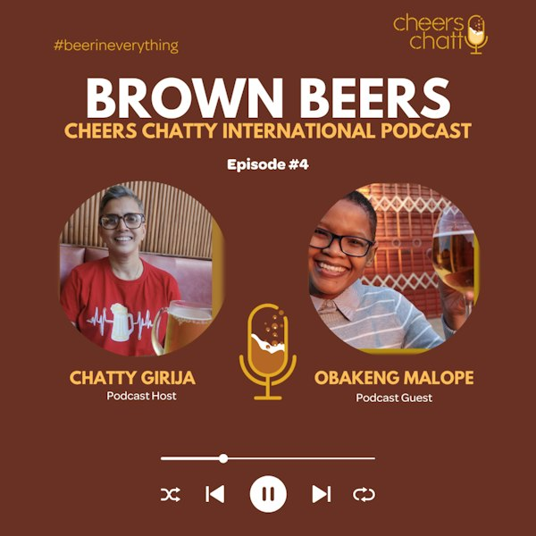

S3 E10 · 2023-12-30 · 28 min
"Teach beer to live like beer." Ft. Obakeng Malope
Childhood stories with life lessons have become a beer movement, empowering the youth of South Africa. Brown Beers International Podcast Series- #Episode 4 Podcast Guest: Obakeng Malope, Beer is Art MovementPodcast Host: Chatty Girija ...